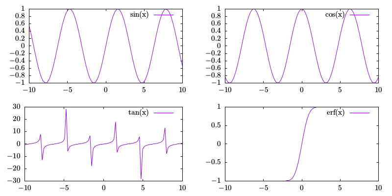

Multiplot in Gnuplot
gnuplot 是一种非常好用的, 功能丰富的, 专业的科学绘图软件, 用途十分广泛. gnuplotting 有一些 examples 与 tips.
目录
有时候, 我们需要在一幅图中分开画几个图, 例如下面这个:

如何实现呢, 这就是本文的主题 – multiplot.
等分绘制多图
将画布平均分成四等分, 每一部分照常绘图即可. 进入 gnuplot
gnuplot> set term aqua size 8,4 solid
gnuplot> set multiplot layout 2,2
multiplot> plot sin(x) t "sin(x)"
multiplot> plot cos(x) t "cos(x)"
multiplot> plot tan(x) t "tan(x)"
multiplot> plot erf(x) t "erf(x)"
multiplot> unset multiplot
最主要的就是 set multiplot layout 2,2, 即将其分成上下左右四分, 若要左右各一个图, 只需要将 layout 2,2 改成 layout 2,1 即可.
自由绘图–大小图
有时候, 我们还想在一幅图中画一个小图, 可以用来放大原图中的某一部分, 即大小图. 代码如下:
set term epslatex standalone color solid size 8,4
set output "demo.tex"
set multiplot
set grid
set title "A smaller plot in a big plot"
set size 1,1
set origin 0,0
set xrange [-10:10]
set yrange [-0.8:1.5]
#plot the square
set arrow from -0.3,0.5 to 0.,0.7 lw 1 back filled
set arrow from -1,0.6 to 1,0.6 lw 1 front nohead
set arrow from -1,-0.6 to 1,-0.6 lw 1 front nohead
set arrow from -1,-0.6 to -1,0.6 lw 1 front nohead
set arrow from 1,-0.6 to 1,0.6 lw 1 front nohead
plot cos(x)*0.5 w l lt 3 t "cos(x)*0.5"
unset arrow
unset title
set size 0.35,0.35
set origin 0.4,0.55
set xrange [-1:1]
set yrange [-0.6:0.6]
plot cos(x)*0.5 w l lt 6 t "cos(x)*0.5"
unset multiplot
set output
!xelatex demo.tex
生成的 pdf 文件如下所示:

水水更健康 (≧▽≦)/ 啦啦啦